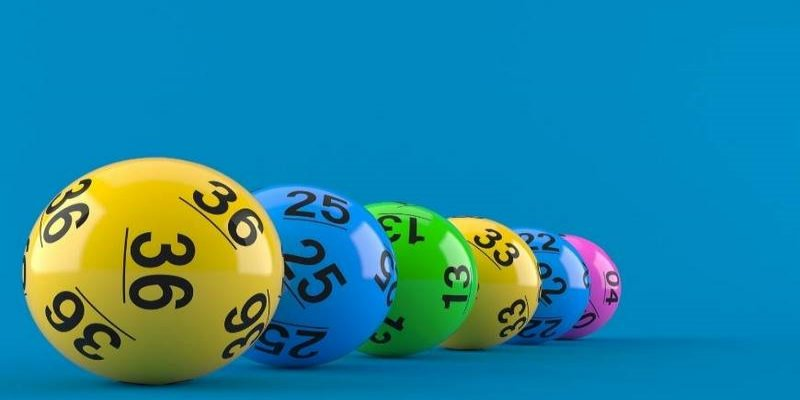
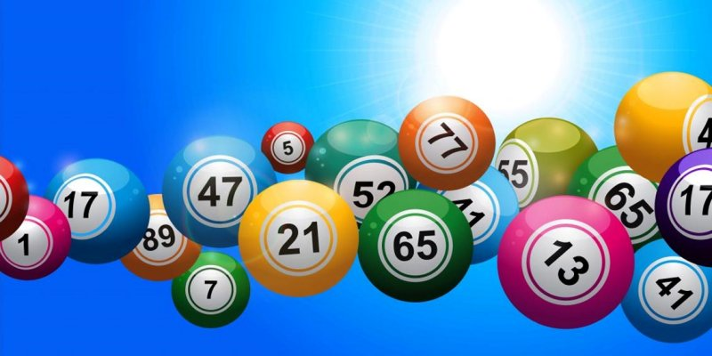
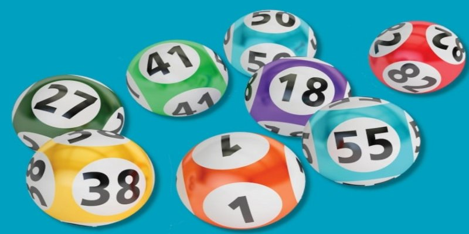

Để đạt được thành công trong việc chơi lô đề, việc nắm vững kiến thức là vô cùng quan trọng. Bạn cần phải làm quen với khái niệm "bạc nhớ đầu câm" và biết cách áp dụng nó khi dự đoán kết quả lô đề miền Bắc. Nhà cái RED88 sẽ cung cấp cho bạn các hướng dẫn chi tiết và mẹo hữu ích, giúp bạn hiểu rõ hơn về cách chơi và cách sử dụng phương pháp này để nâng cao hiệu quả dự đoán của mình.
Bạc nhớ đầu câm là một trò chơi bài truyền thống nổi tiếng ở Việt Nam, được yêu thích vì tính giải trí cao và sự kết hợp giữa may mắn và chiến thuật. Trò chơi thường được chơi với một bộ bài tây 52 lá, nhưng các quy tắc có thể thay đổi tùy theo vùng miền và theo sở thích của người chơi.
Bạc nhớ đầu câm có thể chơi từ 2 đến 4 người, và mục tiêu chính là giành chiến thắng bằng cách đạt được số điểm cao nhất hoặc đánh bại đối thủ qua các vòng cược. Điểm nổi bật của trò chơi là sự kết hợp giữa trí nhớ và khả năng phán đoán. Các người chơi phải ghi nhớ các lá bài đã được lật ra và sử dụng thông tin đó để đưa ra các quyết định cược hợp lý.
Xem Thêm: Xổ Số Sabaidee RED88 - Khám Phá Thế Giới Của Xổ Số Lào
Giới thiệu về bạc nhớ đầu câm
Trò chơi thường bắt đầu bằng việc chia bài cho mỗi người chơi. Các lá bài được chia thành từng lượt, và người chơi có thể chọn cược, theo cược, hoặc gấp bài tùy theo tình hình và sức mạnh của tay bài mình có. Điều làm cho bạc nhớ đầu câm trở nên thú vị là không chỉ cần sự may mắn trong việc chia bài, mà còn yêu cầu người chơi phải sử dụng chiến thuật thông minh và kỹ năng để chiến thắng.
Bạc nhớ đầu câm xảy ra khi không có bất kỳ con số nào từ 1 đến 9 xuất hiện trong hàng chục của bảng kết quả xổ số. Tuy nhiên, việc xác định con số nào để có cơ hội chiến thắng trong lần xổ số tiếp theo có thể là một thách thức lớn.
Nếu bạn đã nắm rõ khái niệm về đầu câm và đuôi câm nhưng chưa biết cách lựa chọn và đặt cược số nào để đạt kết quả như mong muốn, đừng lo lắng. Chúng tôi sẽ cung cấp cho bạn các phương pháp hiệu quả để bắt lô và đánh lô dựa trên đầu câm và đuôi câm. Hãy cùng khám phá những chiến lược này để cải thiện cơ hội thắng của bạn.
Chi tiết cách đánh lô hiệu quả
Để trở thành một người chơi lô tô thành thạo và giỏi, hãy lắng nghe những mẹo hay từ các cao thủ. Tuy nhiên, để nâng cao trình độ của bạn, việc tự tìm hiểu và thực hành đều quan trọng. Dưới đây là một số kinh nghiệm hữu ích được chia sẻ từ nhiều người chơi mà bạn có thể tham khảo:
Mẹo hay đánh lô theo bạc nhớ
Để áp dụng phương pháp đầu câm khi có 3 đầu số, bạn có thể kết hợp hai số cuối của hàng trên với hai số cuối của hàng dưới để tạo thành cặp số lô. Dưới đây là ví dụ cụ thể để minh họa.
Thực hiện ghép các dãy số
Việc làm chủ bạc nhớ đầu câm và áp dụng phương pháp đánh lô theo đầu câm không hề khó khăn. Để bắt đầu, bạn có thể tìm hiểu từ những chi tiết nhỏ nhất. Nếu bạn chưa tìm ra những con số đặc biệt và hữu ích cho mình, có thể tham khảo danh sách các con số đã được cung cấp ở đây. Kênh RED88 xin chúc bạn có những trải nghiệm thú vị và may mắn trong việc đánh lô.
02838555688
263 Nguyễn Chí Thanh, Phường 12, Quận 5, Thành Phố Hồ Chí Minh
#red88#nhà_cái_red88 #link_vao_red88 #casino_red88